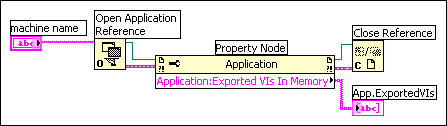

Find related examples
Find related examples
Properties are attributes of a VI, object, or application. Methods perform actions on a VI, object, or application. You can get or set properties and methods on local or remote application instances, VIs, and objects by using the Property Node and the Invoke Node. You can get and set many application, VI, and object settings only through properties and methods.
Refer to the labview\examples\viserver directory for examples of using the Application and VI Class properties and methods.
Find related examples
Use the Property Node to get and set various properties on an application or VI. Select properties from the node by using the Operating tool to click the property terminal or by right-clicking the white area of the node and selecting Properties from the shortcut menu.
The following are examples of how properties can enhance ease of use in an application or VI:
You can read or write multiple properties using a single node. However, some properties are not readable and some are not writable. Use the Positioning tool to resize the Property Node to add new terminals. A small direction arrow to the right of the property indicates a property you read. A small direction arrow to the left of the property indicates a property you write. Right-click the property and select Change to Read or Change to Write from the shortcut menu to change the operation of the property.
The node executes from top to bottom. The Property Node does not execute if an error occurs before it executes, so always check for the possibility of errors. If an error occurs in a property, LabVIEW ignores the remaining properties and returns an error. If you right-click the Property Node and select Ignore Errors inside Node, LabVIEW executes the remaining properties on the Property Node. Only the first error is returned by the Property Node. The error out cluster contains information about which property caused the error.
If the Property Node opens and returns a reference to an object, use the Close Reference function to close the reference.
When you create a property from a front panel object by right-clicking the object, selecting Create�Property Node, and selecting a property from the shortcut menu, LabVIEW creates a Property Node on the block diagram that is implicitly linked to the front panel object. Because such a Property Node is implicitly linked to the front panel object that you created it from, the node has no reference input and you do not need to wire the node to the terminal of the front panel object or the control reference. To remove the link to the front panel object, right-click the Property Node on the block diagram and select Disconnect From Control from the shortcut menu.
Use the Invoke Node to perform actions, or methods, on an application or VI. Unlike the Property Node, a single Invoke Node executes only a single method on an application or VI. Select a method by using the Operating tool to click the method terminal or by right-clicking the white area of the node and selecting Methods from the shortcut menu. You also can create an implicitly linked Invoke Node by right-clicking a front panel object, selecting Create�Invoke Node, and selecting a method from the shortcut menu.
The name of the method is always the first terminal in the list of parameters in the Invoke Node. If the method returns a value, the method terminal displays the return value. Otherwise, the method terminal has no value.
The Invoke Node lists the parameters from top to bottom with the name of the method at the top and the optional parameters, which are dimmed, at the bottom.
You can get or set properties on a local or remote application instance, perform methods on LabVIEW, or both. The following block diagram shows how to display all VIs in memory on a local computer in a string array on the front panel.
If you do not wire a refnum to the reference input, the Property Node or Invoke Node uses a reference to the current application instance. If you want to manipulate the properties or methods of another application instance, you must wire an application reference to the reference input. If you have multiple application instances open simultaneously, be sure to wire an application reference to the reference input. For example, LabVIEW opens a new application instance each time you create a LabVIEW project or a target for a LabVIEW project. LabVIEW also creates a main application instance, which contains open VIs that are not part of a project and VIs that you did not open from a project.
To find the exported VIs in memory on a remote computer, wire a string control to the machine name input of the Open Application Reference function, as shown in the following block diagram, and enter the IP address or domain name. You also must select the Exported VIs In Memory property because the All VIs In Memory property used in the previous block diagram applies only to local application instances.

You also can use the Default:Application property to return the default application reference programmatically. Use the Application property to open the target application instance programmatically.
You can get or set properties of a VI, perform methods on a VI, or both. Use the Open VI Reference function to return a VI reference, and then use Property Nodes and Invoke Nodes as you would when manipulating Application Class properties and methods.
If you do not wire a refnum to the reference input, the property or method uses a reference to the VI containing the Property Node or Invoke Node. If you want to manipulate the properties or methods of another VI, you must wire a VI refnum to the reference input.
The Property Node operates similarly to the Invoke Node. After you wire a VI refnum to the Property Node, you can access all the VI Class properties.
In some VIs, you must access both Application and VI Class properties or methods. You must open and close the Application and VI Class refnums separately, as shown in the following block diagram.
 |
Note��The application reference on this block diagram is an implicit reference, and therefore does not need to be closed. Refer to the Closing References in LabVIEW tutorial for more information about when to close references in LabVIEW. |
The following block diagram shows how to determine the exported VIs in memory on a local computer and to display the path to each of the VIs on the front panel. To find the exported VIs in memory, you must access an Application Class property. To determine the paths to each of these VIs, you must access a VI Class property. The number of exported VIs in memory determines the number of times the For Loop executes. Place the Open VI Reference and Close Reference functions inside the For Loop because you need a VI refnum for each VI in memory.